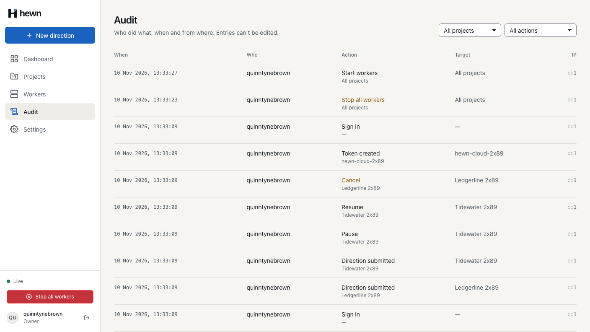
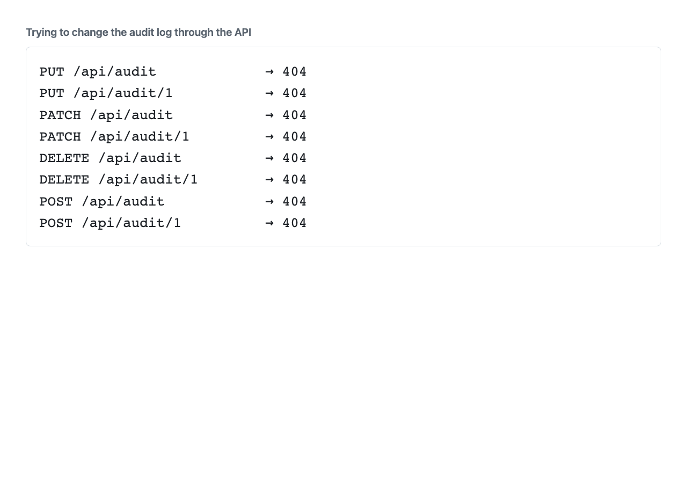
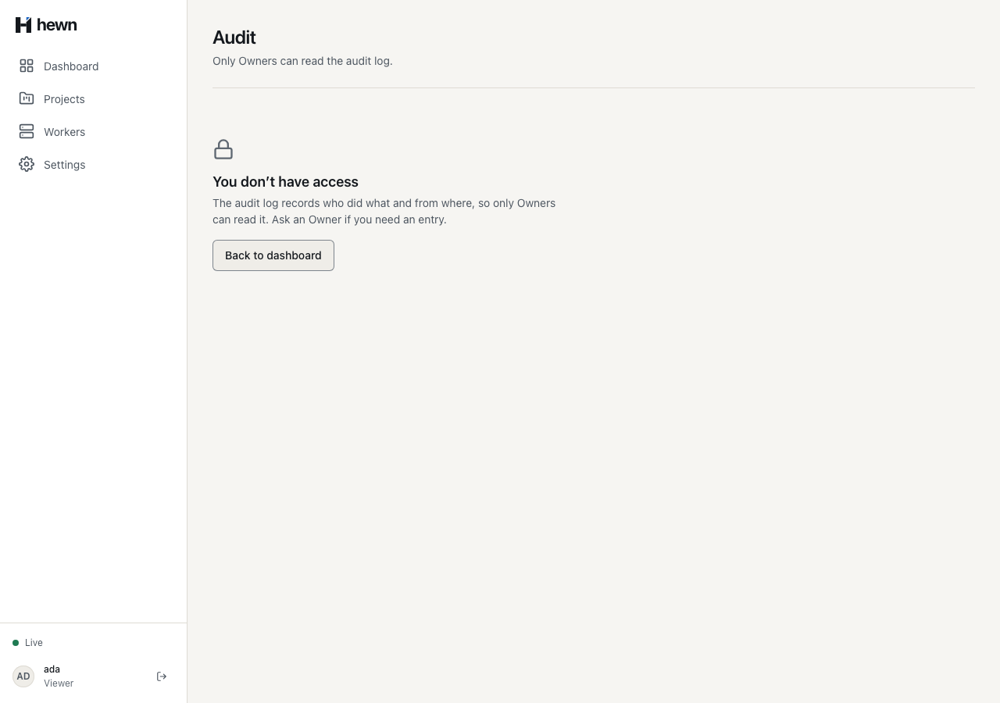
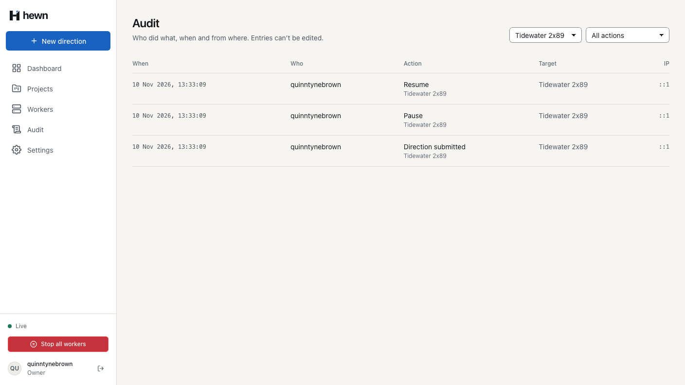
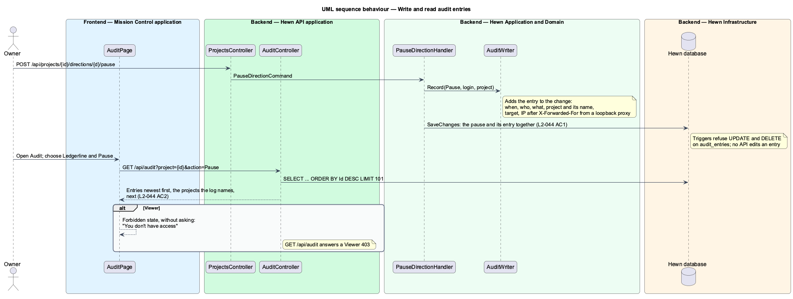
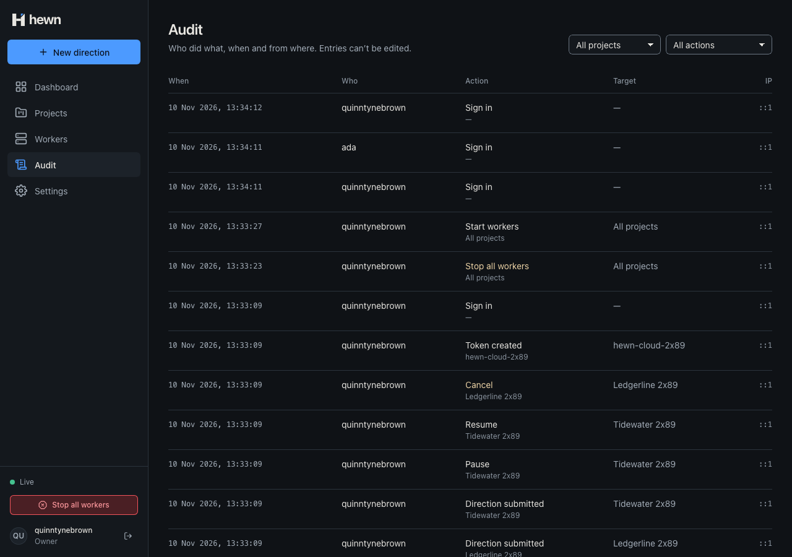
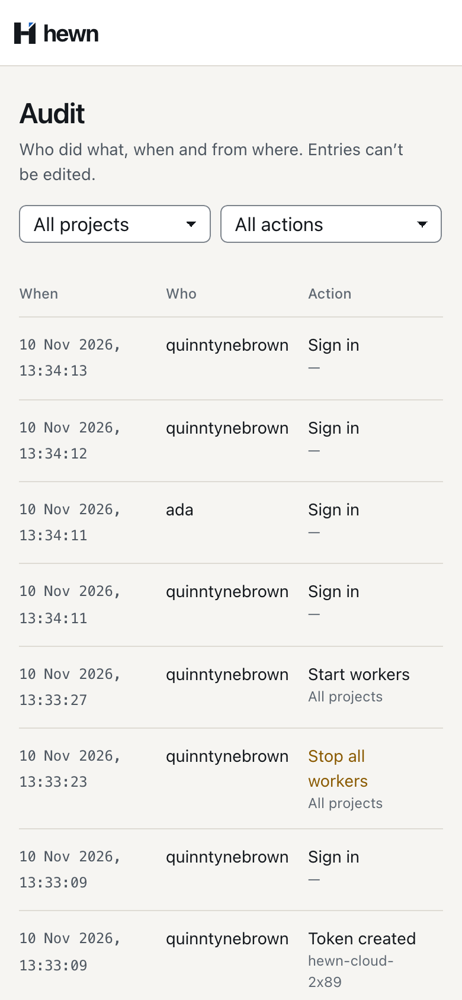

Who did what, when and from where. Entries can’t be edited.



if (run.Status is RunStatus.Queued or RunStatus.Halted)
{
// No step is in progress (or all workers are stopped), so there is nothing to wait for.
await pipeline.OnPauseTakesEffectAsync(run, project, direction, cancellationToken);
}
audit.Record(AuditAction.Pause, user.Login, project);
await db.SaveChangesAsync(cancellationToken);
await events.PublishAsync(cancellationToken);
return DirectionControl.Result(direction);
public void Record(AuditAction action, string actor, Project project) =>
Add(action, actor, project.Id, project.Name, project.Name, origin.IpAddress);
/// <summary>Records a merge Hewn made for whoever submitted the direction: no IP address.</summary>
public void RecordMerge(string actor, Project project, int pullRequest) =>
Add(AuditAction.Merge, actor, project.Id, project.Name, $"{project.Name} #{pullRequest}", null);
migrationBuilder.Sql(
"CREATE TRIGGER audit_entries_no_update BEFORE UPDATE ON audit_entries " +
"BEGIN SELECT RAISE(ABORT, 'audit entries are append-only'); END;");
migrationBuilder.Sql(
"CREATE TRIGGER audit_entries_no_delete BEFORE DELETE ON audit_entries " +
"BEGIN SELECT RAISE(ABORT, 'audit entries are append-only'); END;");


var merges = Entries(await AuditAsync(owner, "?action=Merge"));
var merge = Assert.Single(merges);
Assert.Equal("quinntynebrown", merge.GetProperty("actor").GetString());
Assert.Equal($"Ledgerline #{number}", Str(merge, "target"));
Assert.Equal(projectId, merge.GetProperty("projectId").GetGuid());
Assert.Null(Str(merge, "ipAddress"));
await audit.projectFilter.selectOption({ label: tidewater });
await expect(page).toHaveURL(new RegExp(`project=${tidewaterId}`));
await expect(audit.rows).toHaveCount(2);
expect((await audit.entries()).map((e) => e.action)).toEqual(['Cancel', 'Direction submitted']);
await audit.actionFilter.selectOption({ label: 'Cancel' });
await expect(audit.rows).toHaveCount(1);
expect((await audit.entries())[0]).toMatchObject({ action: 'Cancel', target: tidewater });
await audit.actionFilter.selectOption({ label: 'Stop all workers' });
await expect(audit.emptyTitle).toHaveText('No entries match these filters');

